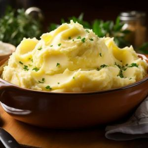

You can make great mashed potatoes efficiently and any way you like—smooth or chunky, fluffy or creamy, earthy or buttery —as long as you start with properly cooked spuds. It's crucial to avoid overcooking, which results in too much free starch that gelatinizes and renders the mash gluey. To avoid overcooking and also make the cooking go as quickly as possible, we started by slicing the potatoes thin to ensure that they'd cook through more quickly and evenly. We also packed them tightly into a moderately sized pot, which reduced the amount of water needed to cover them and thus the time it took for the water to come to a boil. Choosing the potato variety, processing tool, and ratio of half-and-half (richer than milk, less cloying than cream) to potato allowed us to adjust the flavor and consistency to our liking.
Before you Begin
Yukon Gold potatoes will deliver buttery flavor and color; for earthier flavor, use russets. For a smooth mash, use a ricer or food mill; for a chunkier texture, use a potato masher. For lean mashed potatoes, use milk; for a richer result, use half-and-half. Slicing the potatoes while the water comes to a boil saves time. When not serving it with gravy, we top the mash with a pat of butter.
Find more easy Thanksgiving recipes on our Homepage